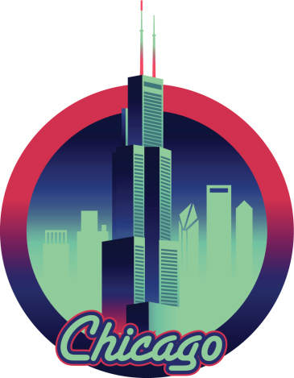
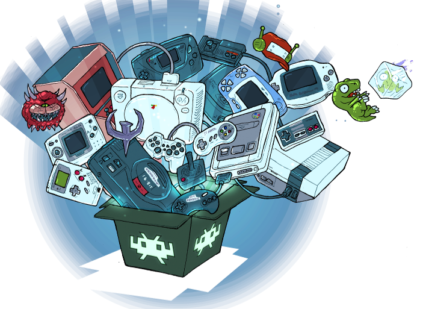

This website is about myself and topics that I find interesting to include here. I probably will add more to this website in the future on topics that I find interesting. Right now I just have my homepage, resume, and a webpage about emulation.
My name is Adrian, and I'm a first year undergrad ITM major at IIT. Some quick facts about me is that I was born in Chicago and have been living here my whole life, my favorite things to do is video games, and messing around with computers. I also enjoy modifying and taking apart electrionics like game consoles and smaller devices. One more fact is that I like to go running and sometimes swimming especially on warm day when I have the time to do so.
While I do talk about emulation on this page, I wanted to include my reason here as my interest in PC gaming and console gaming is why I find emulation, especially video game emulation, fun and interesting and that it allows me to experience many more games and systems that I may be unable to get the hardware for.
